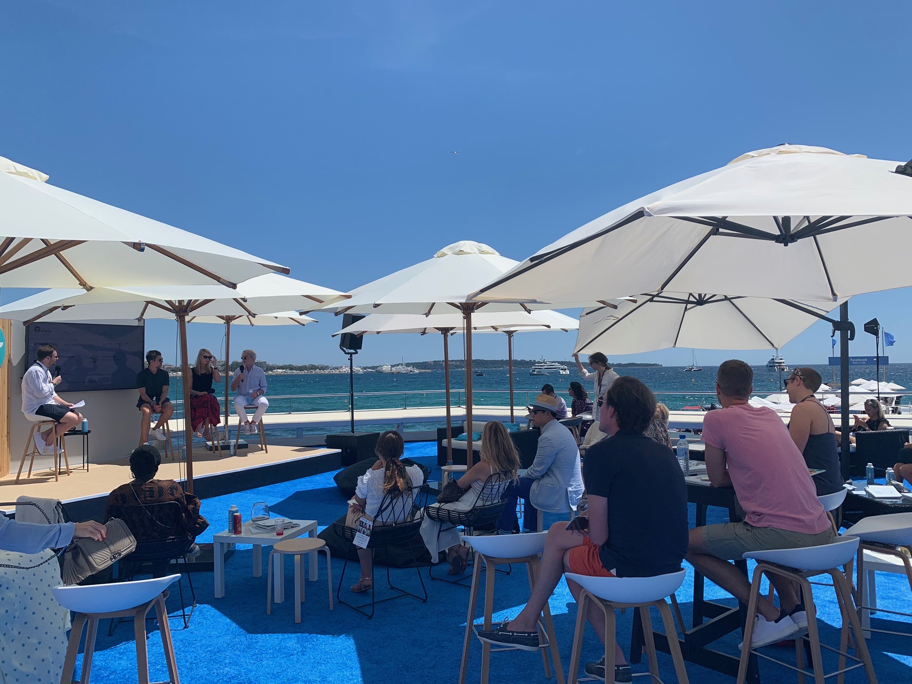
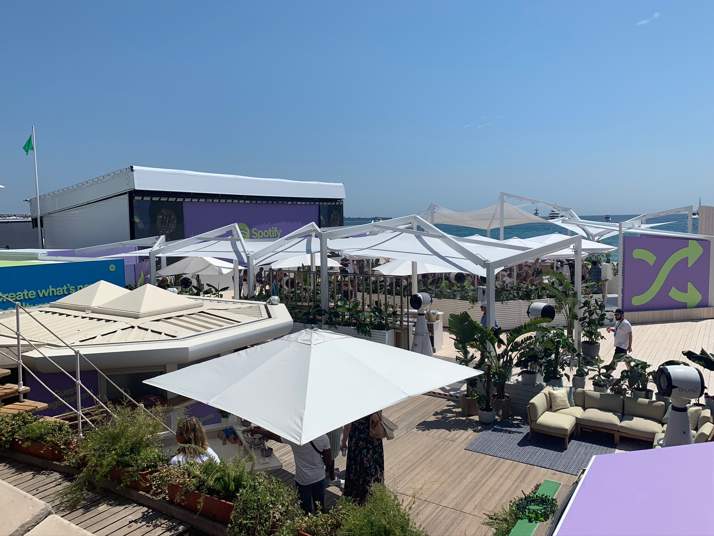
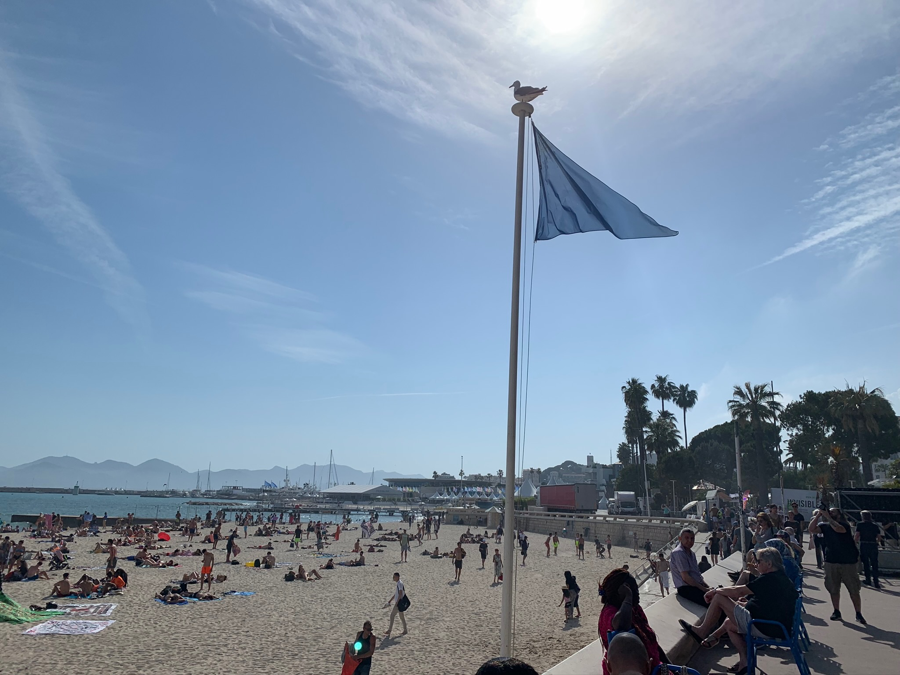
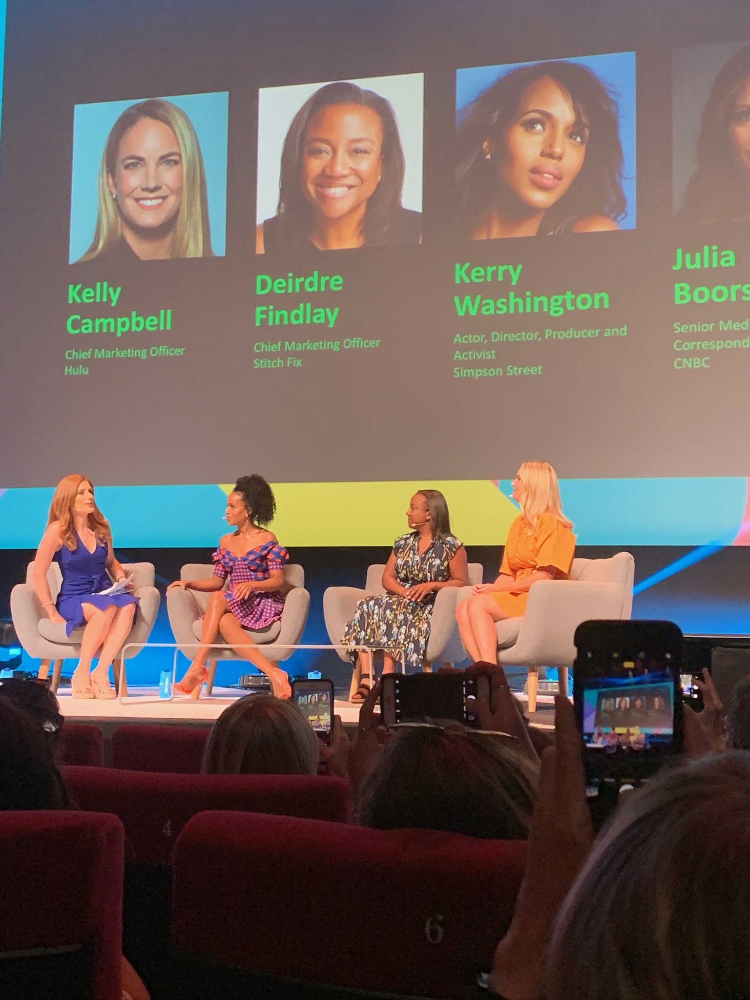
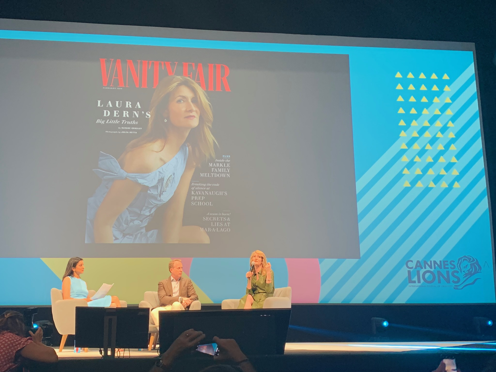
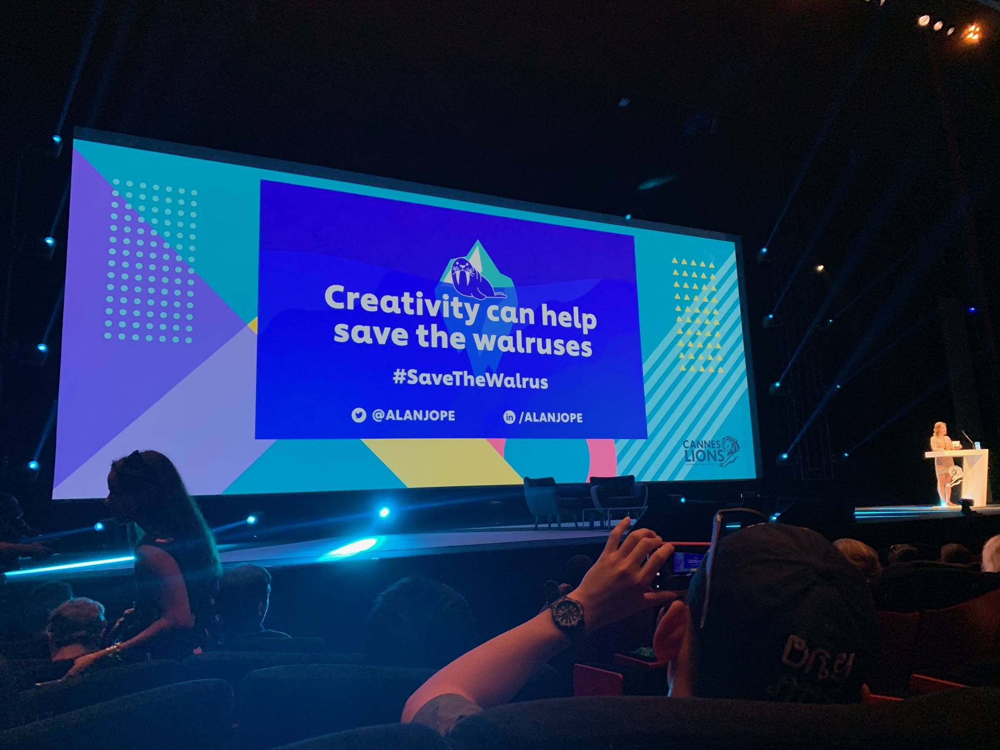
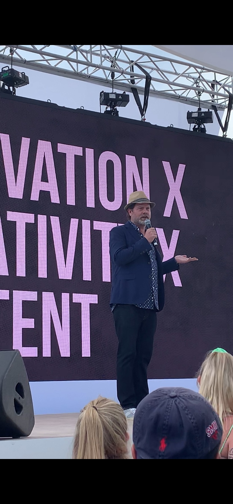
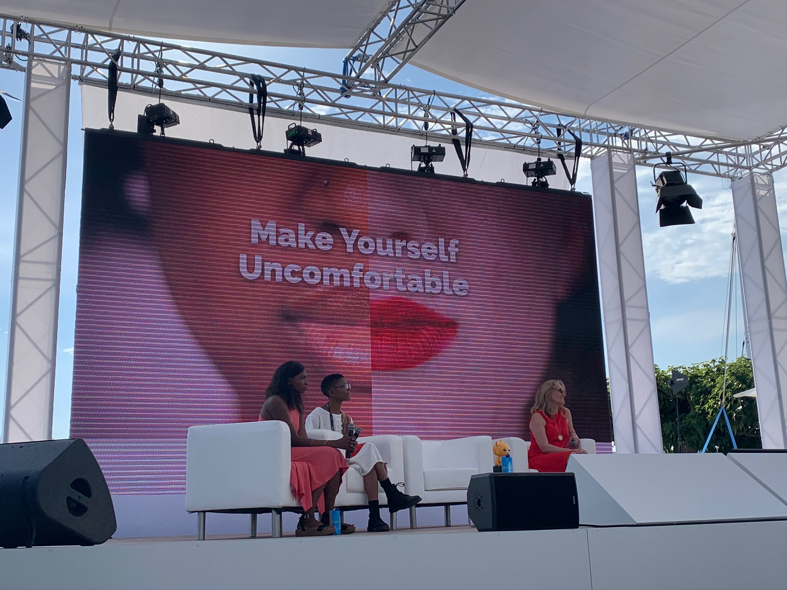

This is the walkway towards all the company's tents...
Tent #1
The tents were designed so aesthetically!
Inside the Tents

This is another one of the tents inside the walkway; this one was outdoors with a view of the beach🌞
Beyond the Walkway

If you keep walking, there are more large events taking place by big brands such as 📍Pinterest, Spotify🎵, and Twitter.
The Beach

Another view of the beach!
The Talks

This was the first talk I attended, featuring actress Kerry Washington! They talked about this new fashion app, and how fashion is represented in the movie industry.
My Favorite Talk

This was my favorite talk I attended, featuring actress Laura Dern and her boss. They talked about women in tv series. Laura talked a lot about her start in the movie industry and Jurassic Park, and the audience got a preview of her HBO hit TV show Big Little Lies.
Company's Missions in Today's Climate

This was another one of my favorite talks, featuring Unilever. A common theme at Cannes were brands coming in to adapt their reputation.
More Celebrities

I could not believe that I saw Dwight. The Office is my all-time favorite TV Show and I was definitely starstruck yet again!
Bringing Miami to France

This was another one of my favorite talks - it was about the Miami Ad School and its impact stories.